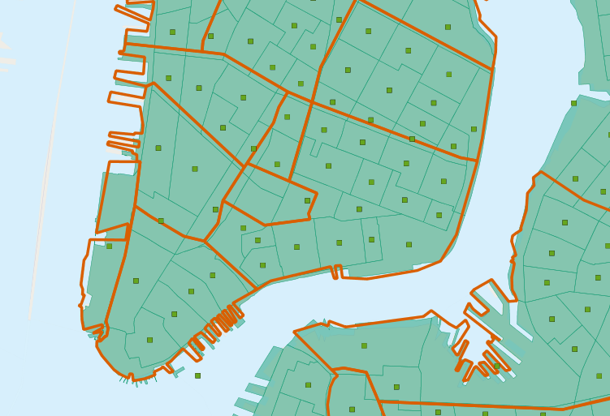
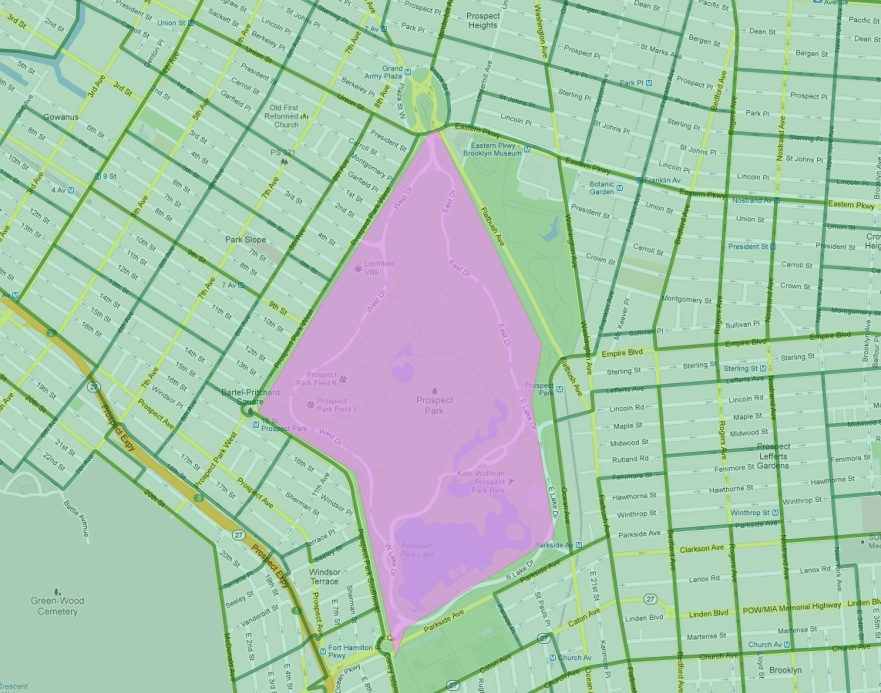
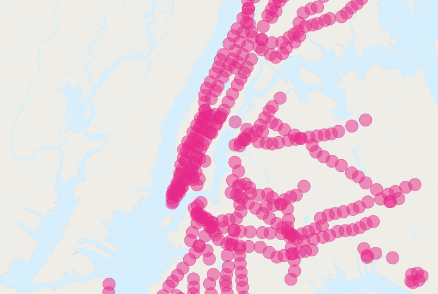

24. More Spatial Joins¶
In the last section we saw the ST_Centroid(geometry) and ST_Union([geometry]) functions, and some simple examples. In this section we will do some more elaborate things with them.
24.1. Creating a Census Tracts Table¶
In the workshop \data\ directory, is a file that includes attribute data, but no geometry, nyc_census_sociodata.sql. The table includes interesting socioeconomic data about New York: commute times, incomes, and education attainment. There is just one problem. The data are summarized by “census tract” and we have no census tract spatial data!
In this section we will
- Load the
nyc_census_sociodata.sqltable - Create a spatial table for census tracts
- Join the attribute data to the spatial data
- Carry out some analysis using our new data
24.1.1. Loading nyc_census_sociodata.sql¶
- Open the SQL query window in PgAdmin
- Select File->Open from the menu and browse to the
nyc_census_sociodata.sqlfile - Press the “Run Query” button
- If you press the “Refresh” button in PgAdmin, the list of tables should now include at
nyc_census_sociodatatable
24.1.2. Creating a Census Tracts Table¶
As we saw in the previous section, we can build up higher level geometries from the census block by summarizing on substrings of the blkid key. In order to get census tracts, we need to summarize grouping on the first 11 characters of the blkid.
360610001001001 = 36 061 000100 1 001
36 = State of New York
061 = New York County (Manhattan)
000100 = Census Tract
1 = Census Block Group
001 = Census Block
Create the new table using the ST_Union aggregate:
-- Make the tracts table
CREATE TABLE nyc_census_tract_geoms AS
SELECT
ST_Union(geom) AS geom,
SubStr(blkid,1,11) AS tractid
FROM nyc_census_blocks
GROUP BY tractid;
-- Index the tractid
CREATE INDEX nyc_census_tract_geoms_tractid_idx
ON nyc_census_tract_geoms (tractid);
24.1.3. Join the Attributes to the Spatial Data¶
Join the table of tract geometries to the table of tract attributes with a standard attribute join
-- Make the tracts table
CREATE TABLE nyc_census_tracts AS
SELECT
g.geom,
a.*
FROM nyc_census_tract_geoms g
JOIN nyc_census_sociodata a
ON g.tractid = a.tractid;
-- Index the geometries
CREATE INDEX nyc_census_tract_gidx
ON nyc_census_tracts USING GIST (geom);
24.1.4. Answer an Interesting Question¶
Answer an interesting question! “List top 10 New York neighborhoods ordered by the proportion of people who have graduate degrees.”
SELECT
100.0 * Sum(t.edu_graduate_dipl) / Sum(t.edu_total) AS graduate_pct,
n.name, n.boroname
FROM nyc_neighborhoods n
JOIN nyc_census_tracts t
ON ST_Intersects(n.geom, t.geom)
WHERE t.edu_total > 0
GROUP BY n.name, n.boroname
ORDER BY graduate_pct DESC
LIMIT 10;
We sum up the statistics we are interested, then divide them together at the end. In order to avoid divide-by-zero errors, we don’t bother bringing in tracts that have a population count of zero.
graduate_pct | name | boroname
--------------+-------------------+-----------
47.6 | Carnegie Hill | Manhattan
42.2 | Upper West Side | Manhattan
41.1 | Battery Park | Manhattan
39.6 | Flatbush | Brooklyn
39.3 | Tribeca | Manhattan
39.2 | North Sutton Area | Manhattan
38.7 | Greenwich Village | Manhattan
38.6 | Upper East Side | Manhattan
37.9 | Murray Hill | Manhattan
37.4 | Central Park | Manhattan
Note
New York geographers will be wondering at the presence of “Flatbush” in this list of over-educated neighborhoods. The answer is discussed in the next section.
24.2. Polygon/Polygon Joins¶
In our interesting query (in Answer an Interesting Question) we used the ST_Intersects(geometry_a, geometry_b) function to determine which census tract polygons to include in each neighborhood summary. Which leads to the question: what if a tract falls on the border between two neighborhoods? It will intersect both, and so will be included in the summary statistics for both.
To avoid this kind of double counting there are two methods:
- The simple method is to ensure that each tract only falls in one summary area (using ST_Centroid(geometry))
- The complex method is to divide crossing tracts at the borders (using ST_Intersection(geometry,geometry))
Here is an example of using the simple method to avoid double counting in our graduate education query:
SELECT
100.0 * Sum(t.edu_graduate_dipl) / Sum(t.edu_total) AS graduate_pct,
n.name, n.boroname
FROM nyc_neighborhoods n
JOIN nyc_census_tracts t
ON ST_Contains(n.geom, ST_Centroid(t.geom))
WHERE t.edu_total > 0
GROUP BY n.name, n.boroname
ORDER BY graduate_pct DESC
LIMIT 10;
Note that the query takes longer to run now, because the ST_Centroid function has to be run on every census tract.
graduate_pct | name | boroname
--------------+---------------------+-----------
48.0 | Carnegie Hill | Manhattan
44.2 | Morningside Heights | Manhattan
42.1 | Greenwich Village | Manhattan
42.0 | Upper West Side | Manhattan
41.4 | Tribeca | Manhattan
40.7 | Battery Park | Manhattan
39.5 | Upper East Side | Manhattan
39.3 | North Sutton Area | Manhattan
37.4 | Cobble Hill | Brooklyn
37.4 | Murray Hill | Manhattan
Avoiding double counting changes the results!
24.2.1. What about Flatbush?¶
In particular, the Flatbush neighborhood has dropped off the list. The reason why can be seen by looking more closely at the map of the Flatbush neighborhood in our table.
As defined by our data source, Flatbush is not really a neighborhood in the conventional sense, since it just covers the area of Prospect Park. The census tract for that area records, naturally, zero residents. However, the neighborhood boundary does scrape one of the expensive census tracts bordering the north side of the park (in the gentrified Park Slope neighborhood). When using polygon/polygon tests, this single tract was added to the otherwise empty Flatbush, resulting in the very high score for that query.
24.3. Large Radius Distance Joins¶
A query that is fun to ask is “How do the commute times of people near (within 500 meters) subway stations differ from those of people far away from subway stations?”
However, the question runs into some problems of double counting: many people will be within 500 meters of multiple subway stations. Compare the population of New York:
SELECT Sum(popn_total)
FROM nyc_census_blocks;
8175032
With the population of the people in New York within 500 meters of a subway station:
SELECT Sum(popn_total)
FROM nyc_census_blocks census
JOIN nyc_subway_stations subway
ON ST_DWithin(census.geom, subway.geom, 500);
10855873
There’s more people close to the subway than there are people! Clearly, our simple SQL is making a big double-counting error. You can see the problem looking at the picture of the buffered subways.
The solution is to ensure that we have only distinct census blocks before passing them into the summarization portion of the query. We can do that by breaking our query up into a subquery that finds the distinct blocks, wrapped in a summarization query that returns our answer:
WITH distinct_blocks AS (
SELECT DISTINCT ON (blkid) popn_total
FROM nyc_census_blocks census
JOIN nyc_subway_stations subway
ON ST_DWithin(census.geom, subway.geom, 500)
)
SELECT Sum(popn_total)
FROM distinct_blocks;
5005743
That’s better! So a bit over half the population of New York is within 500m (about a 5-7 minute walk) of the subway.